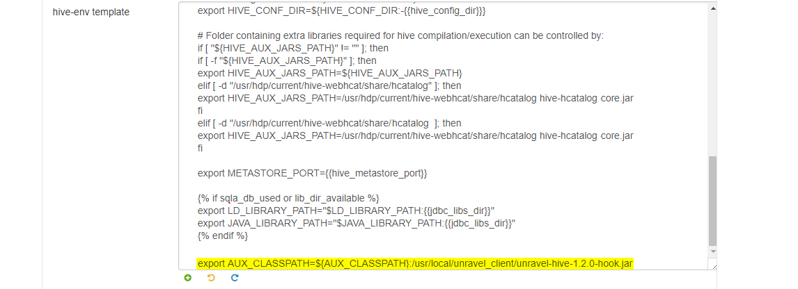
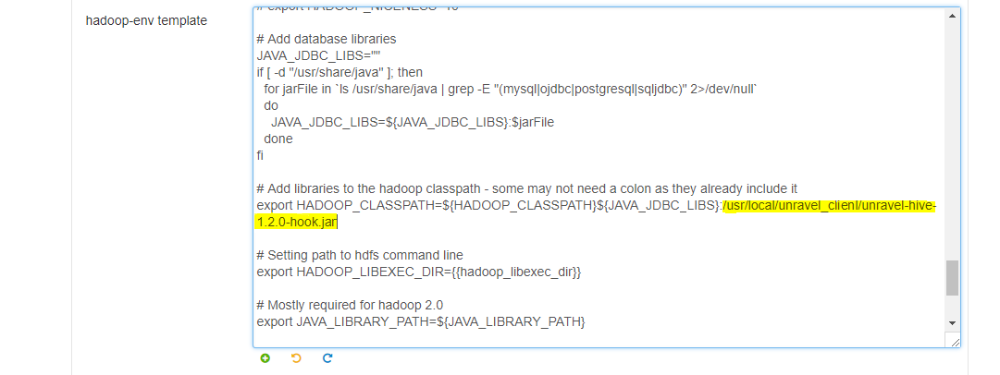
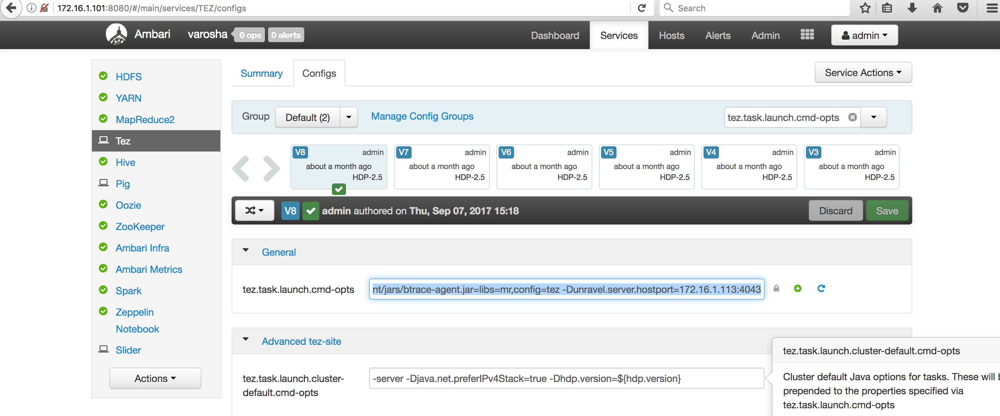

Hortonworks Data Platform (HDP)
Tip
This guide is compatible with:
HDP 2.2-2.6
Ordered Steps
Step 1: Install Unravel Server on HDP
Table of Contents
3. Configure Unravel Server (Basic/Core Options)
6. Configure Unravel Server (Advanced Options)
Introduction
This topic explains how to deploy Unravel Server 4.0 on HDP. These instructions apply to Unravel Server 4.0. For older versions of Unravel Server, contact Unravel Support.
Workflow Summary
Pre-installation check
Configure the host machine.
Install the Unravel Server RPM on the host machine.
Configure Unravel Server (basic/core options).
Log into Unravel Web UI.
(Optional) Configure Unravel Server (advanced options).
Pre-Installation Check
The following installation requirements must be met for successful installation of Unravel.
Platform Compatibility
HDP 2.2-2.6
Hadoop 1.x - 2.x
Kafka 0.9-1.0 (Apache ver. equiv.)
Kerberos
Hive 0.9.x - 1.2.x
Spark 1.3.x - 2.2.x
Hardware
Architecture: x86_64
Cores: 8
RAM: 64GB minimum, 128GB for medium volume (>25,000 jobs per day), 256GB for high volume (>50,000 jobs per day)
Disk:
/usr/local/unravelwith 8GB free minimum (can be symlink)Disk:
/srv/unravelwith 500GB free minimum (can be symlink)For 60,000+ MR jobs per day, two or more gateway/edge nodes are recommended ("multi-host Unravel")
Software
Operating System: RedHat/Centos 6.4 - 7.4
libaio.x86_64installedSELINUX=permissive(or disabled) should be set in/etc/selinux/configHDFS+Hive+YARN client/gateway, Hadoop and Hive commands in
PATHIf Spark is in use, Spark client gateway
You need to register edge node to Ambari
LDAP (AD or Open LDAP) compatible for Unravel Web UI user authentication (Open signup by default)
On Unravel Edge-node server, please do not have zookeeper installed in same server
Access Permissions
If Kerberos is in use, a keytab for principal is required for access to:
Access to YARN’s “done dir” in HDFS
Access to YARN’s log aggregation directory in HDFS
Access to Spark event log directory in HDFS
Access to file sizes under HIve warehouse directory
Access to YARN Resource Manager REST API
principal needs right to find out which RM is active
JDBC access to the Hive Metastore (read-only user is sufficient)
Application Timeline Server (ATS) read-only
Note
The RUN_AS user must be included in yarn.admin.acl and tez.am.view-acls, either as a separate user or as a member of a group, if
the cluster uses kerberos for authentication or
the resource manager has been configured in high availability mode,
Network
Port 3000 from users and entire cluster to Unravel Web UI
HDFS ports open from Hadoop cluster to Unravel Server(s)
For YARN, Hive Metadata DB port open to Unravel Server(s) for partition reporting
UDP and TCP port 4043 open from entire cluster to Unravel Server(s)
For Oozie, port 11000 open from Unravel Server(s) to the Oozie server
Resource Manager (RM) port 8032 from Unravel Server(s) to the RM server(s)
ATS port 8188 from Unravel Servers(s) to ATS server(s)
Port 4020, 4176, 4181 through 4189, 3316, 4091 must be available for localhost communication between Unravel daemons or Unravel servers (if multi-host Unravel installation)
1. Configure the Host Machine
Allocate a Cluster Gateway/Edge/Client Host with HDFS Access
For HDP, use Ambari Web UI to create a Gateway node configuration.
2. Install the Unravel Server RPM on the Host Machine
Get the Unravel Server RPM
See Download Unravel Software.
Make symlinks if required
If you want the two disk areas used by Unravel to be on
different volumes, you can make symlinks to specific areas before
installing (or do
a mv and symlink symlink after
installing). Do it before the first install if there is
insufficient space on the target
paths /usr/local/unravel
and /srv/unravel noted above.
Install the Unravel Server RPM
# sudo rpm -U unravel-4.*.x86_64.rpm* # /usr/local/unravel/install_bin/await_fixups.sh
The precise filename can vary,
depending on how it was fetched or copied. The
rpm command does not require .rpm suffix.
The flag -U works for either initial install or
upgrade.
Run the
specified await_fixups.sh script to make sure
background processing is finished before you do other steps. In a
routine upgrade, it is okay to start all Unravel daemons, but do
not stop or restart them until
the await_fixups.sh prints Done (it takes
a few minutes).
The installation creates /usr/local/unravel/ which
contains the executables, scripts, and settings.
User unravel is created. The initial internal database
and other durable state are put in /srv/unravel/ for
larger storage. By default, the installation supports
YARN.
The master configuration file is
in /usr/local/unravel/etc/unravel.properties and the
logs are in /usr/local/unravel/logs/. The RPM
installation creates user unravel if it does not
already exist; /etc/init.d/unravel_* scripts for
controlling its services as well
as /etc/init.d/unravel_all.sh which can be used to
manually stop, start, and get status of all daemons in proper
order.
The RPM installation also creates an HDFS directory for Hive Hook information collection.
During initial install, a bundled database is used. This can be
switched to use an externally managed MySQL for production. (The
bundled database root mysql password will be stored
in /root/unravel.install.include during
installation.)
Do Host-Specific Post-Installation Actions
For HDP, there are no host-specific post-installation actions.
3. Configure Unravel Server (Basic/Core Options)
Enable Optional Daemons
Depending on your workload volume or kind of activity, you can enable optional daemons at this point. See Creating Multiple Workers for High Volume Data.
Modify unravel.properties
Open
/usr/local/unravel/etc/unravel.propertieswithvi.# sudo vi /usr/local/unravel/etc/unravel.properties
Edit the values in
unravel.propertiesusing the guidelines and descriptions in the table below.Property
Description
Example Values
com.unraveldata.advertised.urlDefines the Unravel Server URL for HTTP traffic.
http://LAN_DNS:3000com.unraveldata.customer.organizationIdentifies your installation for reporting purposes.
Company_and_orgcom.unraveldata.tmpdir
Location where Unravel's temp file will reside
/srv/unravel/tmp
com.unraveldata.history.maxSize.weeksSets retention for search data.
26com.unraveldata.job.collector.done.log.baseOnly modifiable through Unravel Web UI's configuration wizard.
/mr-history/done
com.unraveldata.job.collector.log.aggregation.baseOnly modifiable through Unravel Web UI's configuration wizard.
/app-logs/*/logs/
com.unraveldata.login.adminsDefines the usernames that can access Unravel Web UI's admin pages. Default is
admin.admincom.unraveldata.s3.batch.monitoring.interval.secOptional. Defines the monitoring frequency. Default is 300 seconds (5 minutes). Set this property to 60 for lower latency.
120com.unraveldata.spark.eventlog.locationWhere to find Spark event logs
hdfs:///user/spark/applicationHistory/,hdfs:///user/spark/sparkApplicationHistory/,hdfs:///user/spark/spark2ApplicationHistory/
yarn.resourcemanager.webapp.addressYARN resource manager web address URL
http://example.localdomain:8088
oozie.server.urlOozie URL
http://example.localdomain:11000/oozie
If Kerberos is Enabled:

Add authentication for HDFS...
Create or identify a principal and keytab for Unravel daemons to access HDFS and REST when Kerberos is enabled.
Add properties for Kerberos in
/usr/local/unravel/etc/unravel.properties(substitute correct filename and principal):com.unraveldata.kerberos.principal=unravel/myhost.mydomain@MYREALM com.unraveldata.kerberos.keytab.path=/usr/local/unravel/etc/unravel.keytab
You can verify the principal in a keytab by using
properties klist -kt KEYTAB_FILE. The keytab file should have chmod bits 500 and be owned by 'unravel' local user (default) or by the user you want to use, as explained in Run Unravel Daemons with Custom User.If Ranger is Enabled:
Add these permissions...
Define your own alt principal with narrow privileges. The alt principal can be
unravel(created byrpm) or one of your choosing. The corresponding kerberos principal does not need to have the same name as the local user. The user/principal here should correspond to theXin the switch-user section below.Resource
Principal
Access
Purpose
hdfs://spark-historyYour alt principal
read+execute
Spark event log
hdfs://spark2-history
Your alt principal
read+execute
Spark2 event log
hdfs://mr-history/doneYour alt principal
read+execute
MapReduce logs
hdfs://app-logsYour alt principal
read+execute
YARN aggregation folder
hdfs://apps/hive/warehouse (default value of hive.metastore.warehouse.dir)Your alt principal
read+execute
Obtain table partition sizes
Hive Metastore database GRANT
hive
read+execute
Hive table information
Disable Impala Sensor:
Note
Impala is not officially supported on HDP clusters therefore you should disable the ImpalaSensor by modifying the
/usr/local/unravel/etc/unravel.propertiesfile on Unravel Server:Open
unravel.propertiesfile. Locate or addcom.unraveldata.sensor.tasks.disabledand set it as shown:com.unraveldata.sensor.tasks.disabled=iw
4. Convert Your Unravel Installation to HDP
Run the following commands on Unravel Server:
# sudo /etc/init.d/unravel_all.sh stop # sudo /usr/local/unravel/install_bin/switch_to_hdp.sh
Note
Note: This change will stick after later RPM upgrades; it does not need to be done each time.
Switch User
Depending on your cluster security configuration, you will need to run the switch_to_user script. Dependencies like kerberos and which target user you used for Ranger affect this.
# sudo /usr/local/unravel/install_bin/switch_to_user.sh x y
where X and Y depend
on your environment. See switch_to_user page.
Restart Unravel Server
After edits to com.unraveldata.login.admins in
/usr/local/unravel/etc/unravel.properties it is
necessary to run the following script in order to make changes take
effect. The echo command shows the page to visit with
your browser. If you are using an ssh tunnel or http proxy, you
might need to make adjustments. UNRAVEL_HOST_IP is a
fully qualified DNS or IP Address.
# sudo /etc/init.d/unravel_all.sh start # sleep 60 # echo "http://$(hostname -f):3000/"
This completes the basic/core configuration.
5. Log into Unravel Web UI
Using a web browser, navigate to
http://{UNRAVEL_HOST_IP}:3000
and login as user "admin" with password
"unraveldata".
Note
For the free trial version, use the Chrome web browser.
 |
Congratulations!
Unravel Server is up and running. Unravel Web UI displays collected data. For instructions on using Unravel Web UI, see the User Guide.
6. Configure Unravel Server (Advanced Options)
Enable Additional Data Collection/Instrumentation
Install the Unravel Sensor Parcel on gateway/edge/client nodes that are used to submit Hive queries to push additional information to Unravel Server. For details, see Part 2 (Optional): Enable Additional Data Collection / Instrumentation for HDP.
Step 2: Enable Additional Data Collection / Instrumentation for HDP
Introduction
This topic explains how to
configure Unravel Sensor for Tez
(unravel_us) to retrieve data
from the Tez execution engine. Retrievable data includes Hive
queries, application timelines, sensor agent data, YARN RM data,
logs, and so on.
Note
HIGHLIGHTED text and
text with brackets ( { } ) indicate where you must substitute your
particular values for the text.
UNRAVEL_HOST_IP must be
a fully qualified DNS or an IP address.
1. Convert Your Unravel Installation to HDP.
# sudo /etc/init.d/unravel_all.sh stop # sudo /usr/local/unravel/install_bin/switch_to_hdp.sh
Note
Note: This change remains after RPM upgrades.
2. Update Site-Specific HDP Properties in unravel.properties
Add these properties
to/usr/local/unravel/etc/unravel.properties:Property
Description
Default Value
com.unraveldata.yarn.timeline-service.webapp.addressThe http address of the Timeline service web application
com.unraveldata.yarn.timeline-service.portTimeline service port
8188
For example,
com.unraveldata.yarn.timeline-service.webapp.address=http://172.16.1.101 com.unraveldata.yarn.timeline-service.port=8188
Open
/usr/local/unravel/etc/unravel.propertiesto see if you need to modify any of these properties which were added or modified by the script above (switch_to_hdp.sh).Note
If you are using Spark1 and Spark2 you must set
com.unraveldata.spark.eventlog.locationto two directories using a comma separated list, e.g.,com.unraveldata.spark.eventlog.location=hdfs:///spark1-history/,hdfs:///spark2-history/// Repoint Unravel application logs directory com.unraveldata.job.collector.done.log.base=/mr-history/done com.unraveldata.job.collector.log.aggregation.base=/app-logs/*/logs/ com.unraveldata.spark.eventlog.location=hdfs:///spark-history/ // Add Hive Metastore database information for Unravel Hive Config javax.jdo.option.ConnectionURL=jdbc:mysql://{hostname}:3306/{database_name} javax.jdo.option.ConnectionDriverName=com.mysql.jdbc.Driver javax.jdo.option.ConnectionUserName={HiveMetastoreUserName} javax.jdo.option.ConnectionPassword={HiveMetastorePassword}Log into Ambari Web UI (AWU) to verify the above properties have been set correctly in
unravel.properties. Update the value of any property which has not been set correctly.On the left-hand side of AWU's dashboard, click MapReduce2 | Configs. Select the Advanced tab, and then selectAdvanced mapred-site
Verify
com.unraveldata.job.collector.done.log.baseequals mapreduce.jobhistory.done-dir.
On the left-hand side of AWU's dashboard, click YARN | Configs. Select the Advanced tab, and then selectNode Manager.
Verify
com.unraveldata.job.collector.done.log.aggregation.baseequals yarn.nodemanager.remote-app=log-dir.
On the left-hand side of AWU's dashboard, click Hive | Configs. Select the Advanced tab, and then selectHive Metastore.
Verify
javax.jdo.option.ConnectionURLequals jdbc:mysql://Database Host:3306/Database URL.Verify
javax.jdo.option.ConnectionDriverNameequals JDBC Driver Class.Verify
javax.jdo.option.ConnectionUserNameequals DatabaseUsername.
3. Start Unravel Server
Note
Note: Unravel must be up for the next step to complete.
# sudo /etc/init.d/unravel_all.sh start
4. Install Unravel Hive Hook and Spark Sensor Onto HDP Servers
Install Unravel Hive Hook and Spark
Sensor onto HDP servers (JAR files) as follows (substitute correct
fully qualified host name or IP address for UNRAVEL_HOST_IP):
Login as root and ensure
wgetis installed# /usr/local/unravel/install_bin/unraveldata-clients/unravel_hdp_setup.sh
From Unravel server (eg. edge node) run on each server that will use instrumentation.
Warning
Be sure to substitute valid values.
SPARK_VERSION_X.Yhas the following possible values:spark-1.3for Spark 1.3.x,spark-1.5for Spark 1.5.x,spark-1.6for Spark 1.6.x,spark-2.0for Spark 2.0.x., and2.2.0for Spark 2.2.x.HIVE_VERSION - must be a Hive version that Unravel Server supports: either 1.2.0 or 0.13.0. Be sure to use either of these values in exactly this format.# yum install -y wget # cd /usr/local/unravel/install_bin/unraveldata-clients/ # sudo ./unravel_hdp_setup.sh install -y --unravel-server {UNRAVEL_HOST_IP}:3000 --hive-version {HIVE_VERSION} --spark-version {SPARK_VERSION}Files are installed locally on the edge node under:
/usr/local/unravel_client (Hive hook jar)/usr/local/unravel-agent/jars/ (Resource metrics sensor jars)
Manually copy these two directories on all nodes in the cluster (worker / edge / master). In all cases, instrumented nodes must be able to open port 4043 of Unravel Server (
host2if multi-host Unravel install)
5. Add Unravel Hive Hook hive-site Settings to All of HDP's Servers in the Cluster Using AWU
Warning
Completion of this step requires a restart of all affected Hive services in Ambari UI.
In AWU, on the left-hand side, click Hive | Configs. Select the Advanced tab, and then select Custom hive-site and Add Property below and use Bulk property add mode.
hive.exec.driver.run.hooks=com.unraveldata.dataflow.hive.hook.HiveDriverHook com.unraveldata.hive.hdfs.dir=/user/unravel/HOOK_RESULT_DIR com.unraveldata.hive.hook.tcp=true com.unraveldata.host={add unravel gateway internal IP hostname} // Find below properties as it may already exists, concatenate it with a comma & no spaces hive.exec.pre.hooks=com.unraveldata.dataflow.hive.hook.HivePreHook hive.exec.post.hooks=com.unraveldata.dataflow.hive.hook.HivePostHook hive.exec.failure.hooks=com.unraveldata.dataflow.hive.hook.HiveFailHookIf LLAP is enabled copy the above settings in Custom hive-interactive-site as well.
Manual edit hive-site.xml (no AWU)
hive-site.xmlfile is located at/etc/hive/conf/.
Add
AUX_CLASSPATHto AWU's hive-env template:In AWU, on the left-hand side, click Hive, next click Configs, go to the Advanced tab, and select/click Advanced hive-env.
Next, inside the Advanced hive-env template, towards the end of line add below:
export AUX_CLASSPATH=${AUX_CLASSPATH}:/usr/local/unravel_client/unravel-hive-1.2.0-hook.jar If LLAP is enabled copy above line of code into Advanced hive-interactive-env as well.
You can manually edit hive-env.sh without using AWU.
The
hive-env.shfile is located at/etc/hive/conf/.
Add
HADOOP_CLASSPATHto AWU's hadoop-env template:In AWU, on the left-hand side, click HDFS, next click Configs, go to the Advanced tab, and select/click Advanced hadoop-env.
Next, inside the hadoop-env template, look for export HADOOP_CLASSPATH and append unravel's jar path like below:
export HADOOP_CLASSPATH=${HADOOP_CLASSPATH}:/usr/local/unravel_client/unravel-hive-1.2.0-hook.jar
6. Optionally for Tez, Enable Unravel Tez Instrumentation on all of HDP's Services in the Cluster
Warning
Completion of this step requires a restart of all affected Hive services in Ambari UI.
Append
-javaagent:/usr/local/unravel-agent/jars/btrace-agent.jar=libs=mr,config=tez -Dunravel.server.hostport=UNRAVEL_HOST_IP:4043to tez.am.launch.cmd-opts and tez.task.launch.cmd-opts.Restart the affected component(s). The screenshot below illustrates this change.

Confirm that hive-execution.engine is set to tez.
set hive.execution.engine=tez;
Using the Ambari Web UI (AWU), configure the Btrace agent for Tez:
In a Kerberos environment we will need to modify tez.am.view-acls property with the RUN_AS user or *.
7. Optionally for Spark on YARN, Enable Unravel Spark Instrumentation on All of HDP's Servers in the Cluster
Warning
Completion of this step requires a restart of all affected Spark services in Ambari UI.
Be sure to substitute valid values.for UNRAVEL_HOST_IPX
and SPARK_VERSION_X.Y.
SPARK_VERSION_X.Y
has the following possible
values: spark-1.3 for Spark
1.3.x, spark-1.5for
Spark 1.5.x, spark-1.6for
Spark 1.6.x, spark-2.0for
Spark 2.0.x, spark-2.2for
Spark 2.2.x, and spark-2.3for
Spark 2.3.x.
Add Spark properties into AWU's Custom spark-defaults:
In AWU, on the left-hand side, click Spark | Configs | Custom spark-defaults.
Inside Custom spark-defaults, click Add Property for Spark as follows and use Bulk property add mode:
spark.unravel.server.hostport={UNRAVEL_HOST_IP}:4043 spark.driver.extraJavaOptions=-javaagent:/usr/local/unravel-agent/jars/btrace-agent.jar=config=driver,libs=spark-{SPARK_VERSION_X.Y} spark.executor.extraJavaOptions=-javaagent:/usr/local/unravel-agent/jars/btrace-agent.jar=config=executor,libs=spark-{SPARK_VERSION_X.Y} spark.eventLog.enabled=trueYou can manually edit spark-defaults.conf without using AWU.
The default location for
spark-defaults.confis/usr/hdp/current/SPARK_VERSION_X.Yexcept whenThe cluster only has one spark 1.X version:
/usr/hdp/current/spark-client/confFor spark 2.X version:
/usr/hdp/current/spark2-client/conf
8. Optionally for MapReduce2 (MR) JVM Sensor Cluster-Wide
Warning
Completion of this step will require a restart of all affected HDFS, MAPREDUCE2, YARN and HIVE services in Ambari UI.
In AWU, on the left-hand side, click MapReduce2, next click Configs, go to the Advanced tab, and select/click Advancedmapred-site
Search for MR AppMaster Java Heap Size property and concatenate by copying and pasting the below property for
current.yarn.app.mapreduce.am.command-optsMR JVM sensor. Be sure to leave a white space in-between the current and the following new property.-javaagent:/usr/local/unravel-agent/jars/btrace-agent.jar=libs=mr -Dunravel.server.hostport={UNRAVEL_HOST_IP}:4043On the top notification banner, click Save
In AWU, on the left-hand side, click MapReduce2, next click Configs, go to the Advanced tab, and select/click Custom mapred-site:
Inside Custom mapred-site, click Add Property for MR JVM sensor as follows and use
Bulk property add mode:
On the top notification banner, click Save
mapreduce.task.profile=true mapreduce.task.profile.maps=0-5 mapreduce.task.profile.reduces=0-5 mapreduce.task.profile.params=-javaagent:/usr/local/unravel-agent/jars/btrace-agent.jar=libs=mr -Dunravel.server.hostport=UNRAVEL_HOST_IP:4043
Notice that in this code block, the blank lines separate single full lines of text that are wrapped due to length. Also, ensure you replace
UNRAVEL_HOST_IPwith your Unravel server's IP address.You can manually edit mapred-site.xml without using AWU.
The
mapred-site.xmlfile is located at/etc/hadoop/conf/.
9. Optionally for YARN
If
yarn.acl.enable=truethen you need to grant Unravel access and must set one of the following:yarn.acl.enable=false,oryarn.admin.acl=userName(set to * to allow access to everyone)
10. Confirm that Unravel Web UI Shows Tez Data
Run
/usr/local/unravel/install_bin/hive_test_simple.shon HDP cluster or any cloud environment wherehive.execution.engine=tez.Check Unravel Web UI for Tez data. For instructions, see Tez Application Manager.
Note
Unravel Web UI may take a few seconds to load Tez data.